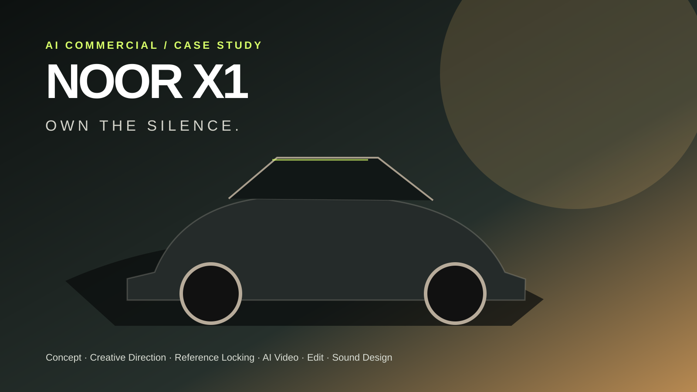
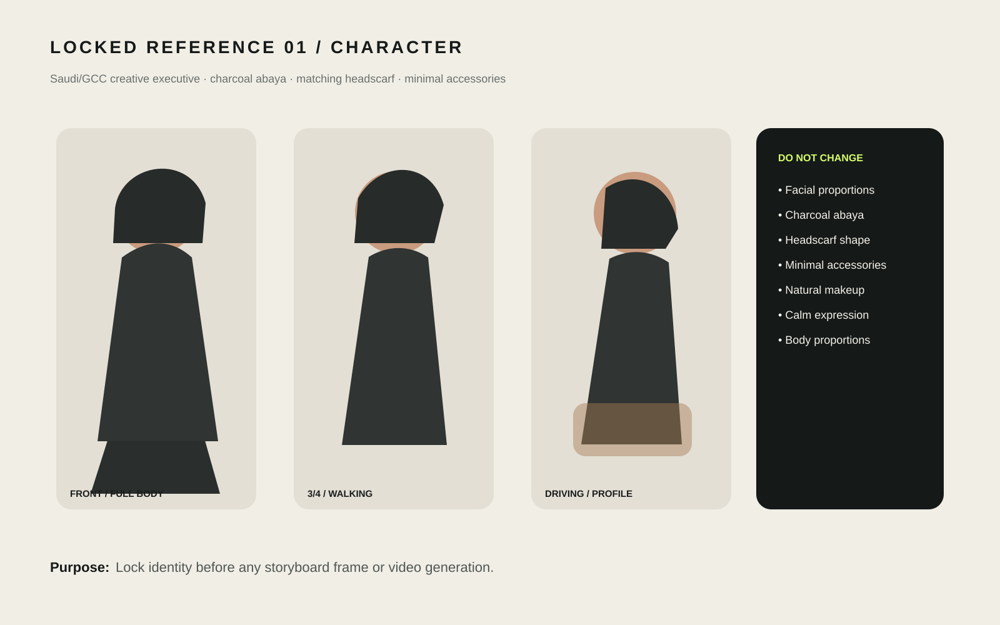
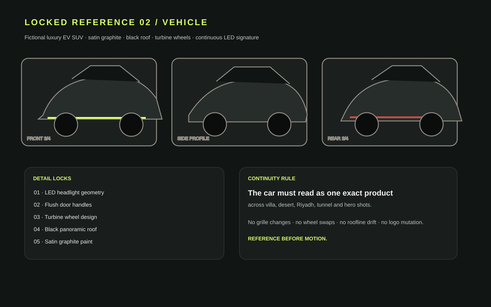
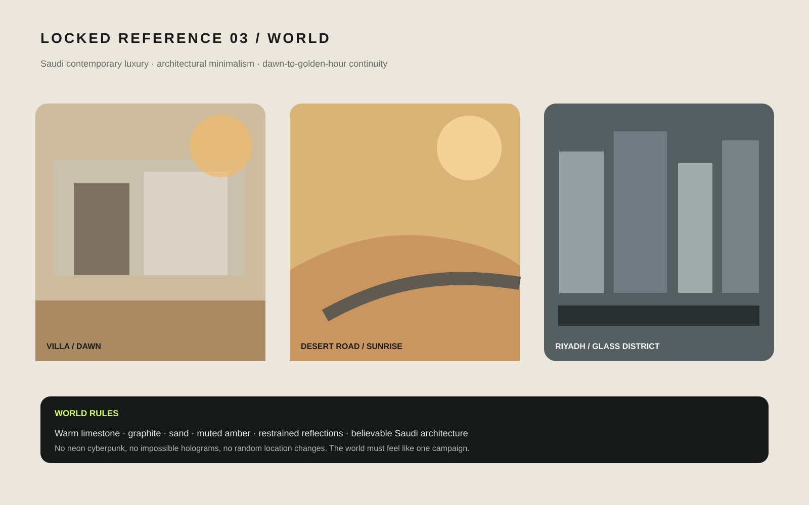

Lock references
Character, vehicle, interior details and environment rules are fixed first.
AI Automotive Commercial / Director-led workflow
A fictional luxury electric SUV launch film built to prove more than image generation: product consistency, character continuity, cinematic direction, quality control, editorial judgment and commercial sound design.

01 / The brief
The goal was not to make a video that looked “AI-generated.” The goal was to create a believable premium automotive spot where the same vehicle, the same driver and the same visual world survived every scene change.
The story stayed deliberately simple: a woman leaves a contemporary Saudi villa, enters a silent luxury EV, crosses the desert, moves into Riyadh, passes through a tunnel and arrives at a final hero reveal.
02 / Reference locking
The first production decision was to avoid generating disconnected shots. Three reference systems were defined first: the human character, the vehicle and the campaign world. Those references became the visual contract for every first frame, last frame and motion clip.



03 / Production workflow
Character, vehicle, interior details and environment rules are fixed first.
Each shot gets a controlled first and last frame using the same locked references.
Short controlled shots reduce morphing risk compared with one long generation.
Draft motion is checked for body, wheel, roof, face, reflection and text drift before final rendering.
Villa → handle → interior → desert → Riyadh → tunnel → driver → hero.
Weak holds and AI artifacts are removed instead of being defended as “good enough.”
Music stays restrained; each edit point receives a precise premium automotive cue.
The last pass checks visual continuity, audio balance, title readability and pacing.
04 / Problems & fixes
Cut distant approach, long handle holds, static interior linger and distorted desert tail.
Removed the mismatched interior section and dirty audio tail; protected a cleaner ending.
Removed the contaminated high-angle section completely rather than masking a visible AI defect.
Rebuilt the rhythm around the surviving strongest shots, then finished with music and beat-synced SFX.
05 / Sound direction
The sound pass was mapped to the actual edit points rather than adding a generic trailer track. The goal was tactile, restrained luxury: small mechanical detail, clean EV motion and controlled low-frequency transitions.
Servo extension + tactile metallic click.
Soft startup chime + electronic wake tone.
EV acceleration swell + clean tire-road rush.
Elegant transition whoosh + denser road ambience.
Controlled sub hit + tunnel-entry reverb.
Subtle glass/reflection shimmer.
Rising air whoosh into golden-hour motion.
Premium resolve hit + soft electric logo shimmer.
06 / Result
The initial 28-second idea became an 18-second portfolio commercial because the edit was allowed to challenge the generation. The final result keeps the same story while removing the parts that weakened trust.
Final professional portfolio cut
1920×1080 · 24 fps master
Locked reference systems before motion
Beat-synced final sound cues
Commercial AI is most useful when the direction is stronger than the generation.
Watch NOOR X1 ↗